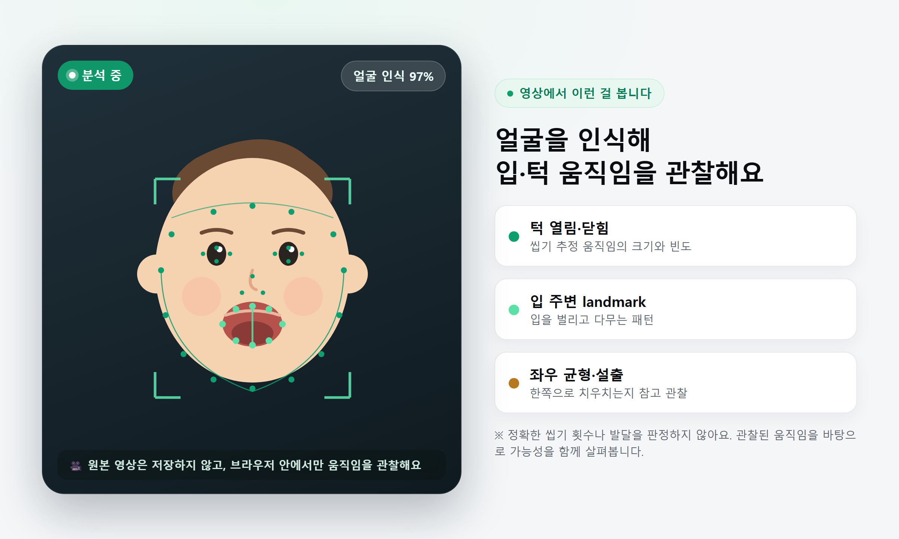

영상에서 무엇을 보고,
어떤 답을 받나요?
씹기 횟수 같은 수치가 아니라, 관찰 → 가능성이 높은 이유 → 다음 식사에서 해볼 행동을 한 세트로 알려드려요.
얼굴을 인식해 입·턱 움직임을 관찰해요
영상 속 얼굴에서 입 주변과 턱의 landmark를 따라가며 씹기 추정 움직임을 관찰합니다. 원본 영상은 저장하지 않고 브라우저 안에서만 처리해요.

그래서 실제로 어떤 답을 받나요?
한 번의 영상으로 아래 순서의 '한 장짜리 코칭'을 받아요.
음식을 입에 넣고 턱을 움직이는 모습은 확인되지만, 삼키기 전 입안에 오래 머금거나 다시 뱉는 행동이 관찰됐어요.
배가 고프지 않아서라기보다, 현재 제공된 고기의 질감이나 크기가 아이가 편하게 처리하기 어려웠을 가능성이 있어요.
- 같은 고기를 결 반대 방향으로 더 잘게 잘라주세요.
- 한 번에 한 조각만 제공해 입안에 너무 많이 들어가지 않게 해주세요.
- 뱉더라도 바로 다른 음식으로 바꾸기보다 작은 크기로 다시 한 번 제시해 보세요.
크기를 줄였을 때 입에 머무는 시간이 줄어드는지, 뱉는 횟수가 달라지는지 살펴보세요.
분석 신뢰도 안내 · 영상에서 입 주변은 확인됐지만 일부 장면에서 얼굴이 가려져 관찰 결과가 제한적일 수 있어요. 한 번의 영상으로 정상·이상 여부를 판단하지 않습니다.
고민에 따라 이런 답을 받아요
가진 고민이 다르면 결과도 달라져요. 언제나 관찰된 모습 → 가능성이 높은 이유 → 다음 식사 행동 순서로요.
씹는 움직임은 있지만 음식이 입안에 오래 머물고 반복적으로 뱉어요.
음식의 질감이나 크기가 현재 처리하기 어려울 수 있어요.
크기를 줄이고 부드러운 상태에서 다시 제공해 보세요.
음식을 입에 넣기 전 고개를 돌리거나 관심이 금방 다른 곳으로 이동해요.
식사 간격, 간식 섭취 또는 식사 환경의 영향을 함께 확인해 볼 필요가 있어요.
식사 전 간식을 조절하고, 식탁 위 자극을 줄인 상태에서 다시 관찰해 보세요.
한입을 먹은 뒤 다음 입까지의 간격이 길고 식사 중 집중이 자주 끊겨요.
씹는 어려움뿐 아니라 한입 크기, 식사 환경, 식사 지속시간의 영향을 받을 수 있어요.
한입 크기를 줄이고, 식사 시간을 일정하게 정해 반응을 비교해 보세요.
※ 결과는 “원인은 이것입니다”가 아니라 “가능성이 있어요”처럼 안내돼요. 영상만으로 확정 진단을 내리지 않습니다.